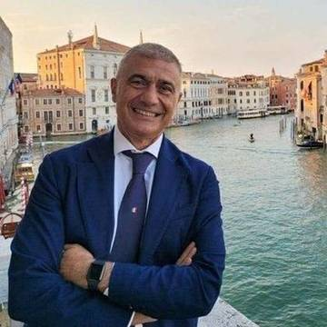

Chi è
Alfonso Pecoraro Scanio
Avvocato di Salerno, deputato per cinque legislature, ministro delle Politiche agricole nel 2000 e ministro dell’Ambiente dal 2006 al 2008. Presiede la Fondazione UniVerde, insegna turismo e sostenibilità alla Milano-Bicocca e a Roma Tor Vergata. Dal 2022 promuove la rete EcoDigital.
- 1959 · nato a Salerno
- Camera · dal 1992 al 2008
- 2000 · ministro delle Politiche agricole
- 2006 · ministro dell’Ambiente
- UniVerde · presidente dal 2009

15 tappe, dalla più recente.
Aule parlamentari, ministeri, università, campagne per il mare. Ogni riga sta in una fonte pubblica, elencata in fondo alla pagina.
-
11 settembre 2026 · Lido di Venezia
Premio a Venezia al video sulle Aree Marine Protette
Alla 83ª Mostra Internazionale d’Arte Cinematografica il video della rete EcoDigital sulle Aree Marine Protette riceve un riconoscimento del Sorriso Diverso Venezia Award, XVI edizione. La consegna è alle 16:30 allo Spazio Incontri del Venice Production Bridge, all’Hotel Excelsior. Il premio lo organizza Università Cerca Lavoro, presieduta da Ilaria Battistelli, con Dream On, il contributo del Ministero della Cultura e il patrocinio di Rai per la Sostenibilità ESG.
Per la rete erano al Lido Alfonso Pecoraro Scanio, Alessandro Di Capua e Michele D’Orso, autori del video «Il Viaggio del Delfino» sul progetto 30x30, il 30% di mare protetto entro il 2030. È il terzo anno di fila che la rete e la Fondazione UniVerde portano un video alla Mostra.

Lido di Venezia, 11 settembre 2026. Alfonso Pecoraro Scanio davanti al Palazzo del Cinema, 83ª Mostra Internazionale d’Arte Cinematografica. -
4 agosto 2026
È legge l’Area Marina Protetta di Capri
Il sì finale in sede legislativa della commissione Ambiente della Camera chiude tre anni di campagna #AMPCapriSubito e supera il vincolo della legge del 1991, che teneva Capri insieme a Punta Campanella. Il 27 agosto Pecoraro Scanio chiede al Governo di istituirne altre.
-
6 settembre 2025 · Venezia
Premio Sorriso Diverso al video «Mare Nostrum»
Il video della Fondazione UniVerde per la campagna «Mediterraneo da remare» riceve il premio alla Mostra del cinema. askanews lancia la notizia con il titolo «Mare non è discarica, video premiato a Venezia», ripreso da Il Sole 24 Ore, Il Tempo, Libero e Appia News.
-
settembre 2024 · Venezia
Premiato lo spot EcoDigital sul turismo sostenibile
Il primo video della rete portato alla Mostra del cinema. Ne danno notizia Il Sole 24 Ore e Sardegna Reporter.
-
7 luglio 2022 · Roma
Nasce la rete EcoDigital
All’incontro «Verso un’Italia eco digital», su iniziativa della senatrice Loredana De Petris, oltre 30 relatori lanciano una rete civica di attivisti, imprese e istituzioni.
-
2011
Parte «Mediterraneo da remare»
Campagna della Fondazione UniVerde con Marevivo e la Guardia Costiera, in canoa e a vela contro la plastica in mare. Dalla XVI edizione la sigla è #PlasticFree #NoLitter, con il CNR e il patrocinio UNEP/MAP.
-
2009
Comincia a insegnare all’università
Turismo sostenibile ed ecoturismo alla Milano-Bicocca. Più tardi turismo e sostenibilità a Roma Tor Vergata.
-
2008
Nasce la Fondazione UniVerde
Fondata su iniziativa sua e del magistrato Gianfranco Amendola. Ne è presidente dal 2009. La fondazione pubblica ogni anno rapporti su turismo sostenibile, agricoltura e rinnovabili.
-
dal 17 maggio 2006 al 7 maggio 2008
Ministro dell’Ambiente e della tutela del territorio e del mare
Governo Prodi II. In quegli anni arriva il secondo conto energia, il decreto del 19 febbraio 2007 firmato dallo Sviluppo economico di concerto con l’Ambiente, che rilancia il fotovoltaico in Italia.
-
dal 2 dicembre 2001 al 19 luglio 2008
Presidente della Federazione dei Verdi
Eletto tre volte consecutive. Nello stesso periodo è segretario della Commissione di vigilanza Rai.
-
dal 26 aprile 2000 all’11 giugno 2001
Ministro delle Politiche agricole e forestali
Governo Amato II. Sono gli anni delle leggi di orientamento e modernizzazione di agricoltura, foreste e pesca, che portano in Italia la filiera corta e l’agricoltura multifunzionale.
-
dal 1996 al 2000
Presidente della Commissione Agricoltura della Camera
Quattro anni alla guida della commissione che prepara la riforma del settore.
-
23 aprile 1992
Entra alla Camera dei deputati
Resta in Parlamento fino al 28 aprile 2008, cinque legislature, dalla XI alla XV. Nella prima siede in Commissione Giustizia.
-
1982
Laurea in Giurisprudenza, Università di Salerno
Tesi in diritto pubblico comparato. Per circa dieci anni fa l’avvocato ed è anche giornalista pubblicista.
-
13 marzo 1959
Nasce a Salerno
Città e data di nascita da voce enciclopedica e biografia personale.
Quattro cose portate avanti per anni.
Capri, dopo 35 anni
Tre anni di campagna #AMPCapriSubito con le associazioni ambientaliste, a partire da Marevivo, e con i gruppi civici dell’isola. Il 4 agosto 2026 l’Area Marina Protetta di Capri diventa legge. Era ferma dal vincolo del 1991. Il 27 agosto 2026 la richiesta al Governo di aprirne altre, rilanciata da askanews, Italpress, Il Tempo, Libero e Capri Press.
Un Mediterraneo senza plastica
«Mediterraneo da remare» nasce nel 2011 con Fondazione UniVerde e Marevivo, insieme alla Guardia Costiera e al Consiglio Nazionale delle Ricerche. Ogni estate tocca porti e spiagge italiane contro la plastica in mare. La XVI edizione è partita dal CNR di Roma il 15 giugno 2026.
Il turismo insegnato e misurato
Insegna turismo sostenibile ed ecoturismo alla Milano-Bicocca e turismo e sostenibilità a Roma Tor Vergata. La Fondazione UniVerde pubblica ogni anno un rapporto sul turismo sostenibile. Nel settembre 2024 lo spot EcoDigital sul tema è stato premiato alla Mostra del cinema di Venezia.
Rinnovabili e filiera corta
Da ministro dell’Agricoltura, le leggi di orientamento del 2001 su filiera corta e multifunzionalità. Da ministro dell’Ambiente, i provvedimenti sulle rinnovabili, tra cui il conto energia del febbraio 2007 che ha fatto partire il solare italiano.
Come è nata la rete.
«Ho fondato EcoDigital perché le buone pratiche in Italia esistono già: le fanno ragazzi, imprese e sindaci, e restano isolate. Ecologia e digitale insieme reggono meglio che da sole. La rete serve a trovare queste esperienze e a metterle in contatto, così chi comincia non riparte da zero. Voglio i giovani protagonisti!»
Testo proposto, da leggere e correggere prima della pubblicazione. Non è una dichiarazione già rilasciata.
Le date qui sotto stanno tutte in una fonte pubblica.
-
23 aprile 2026 · Catania
Le startup portano le buone pratiche all’ARS
Nella sede dell’Assemblea Regionale Siciliana di via Etnea, startupper, imprese e istituzioni lavorano a una proposta di legge regionale per attrarre talenti e investitori nell’innovazione digitale.
-
settembre 2024 · Palermo
Il primo intergruppo EcoDigital d’Italia
Il presidente dell’ARS Gaetano Galvagno annuncia il primo intergruppo parlamentare EcoDigital in Italia, 13 deputati regionali di otto gruppi presieduti da Jose Marano. La prima priorità dichiarata è la crisi idrica.
-
2 febbraio 2024 · Milano
«EcoDigital: Act Now!»
Tutto esaurito a Palazzo Bocconi, sede di W Executive, con la Fondazione Homo Ex Machina e il patrocinio della Fondazione UniVerde. Attivisti, imprese e istituzioni portano proposte su innovazione tecnologica ed economia circolare. Radio Radicale registra la giornata.
-
18 dicembre 2022
La rete si dà una casa online
Nasce il gruppo Facebook «Ecodigital · Verso il 2050», pubblico, amministrato da SOS Terra ETS. Serve ad aggregare e valorizzare le buone pratiche di tutto il territorio nazionale. All’11 settembre 2026 conta quasi 9.000 iscritti.
-
1° dicembre 2022 · Roma
I giovani al centro
Nell’aula consiliare di Palazzo Valentini l’incontro nazionale «Giovani & EcoDigital. Sfide e best practice», subito dopo la COP27. La Fondazione UniVerde scrive che senza il coinvolgimento dei giovani la transizione ecologica è destinata a fallire, e che la rete nasce per rendere le nuove generazioni protagoniste.
-
7 luglio 2022 · Roma
Il lancio
«Verso un’Italia eco digital. Una rete civica di attivisti, imprese e istituzioni per la Transizione Ecologica e Digitale», iniziativa della senatrice Loredana De Petris, promossa da Fondazione UniVerde e TeleAmbiente con Fondazione Homo Ex Machina, Opera2030, SOS Terra e Radio Radicale. Oltre 30 relatori.
In tutte queste date la rete ha cercato chi in Italia manda avanti qualcosa che funziona, un’impresa, un comune, una classe, una startup, e gli ha dato la parola.
Cosa fa adesso.
Dove abbiamo controllato.
Elenco dei documenti consultati il 12 settembre 2026. I domini sono scritti come testo, così la pagina funziona anche senza connessione.
- Easy News Press Agency, «Venezia 83, Sorriso Diverso Venezia Award, i vincitori», 11 settembre 2026easynewsweb.com
- MyWhere, «Venezia 83, assegnati i Sorriso Diverso Award», 11 settembre 2026mywhere.it
- Pagina pubblica di Alfonso Pecoraro Scanio, post dell’11 settembre 2026 sul premio di Venezia e sulle Aree Marine Protettefacebook.com
- askanews, «Pecoraro Scanio: subito nuove aree marine protette, Governo tuteli mare», 27 agosto 2026, e «Mare non è discarica, video premiato a Venezia», 6 settembre 2025askanews.it
- Il Sole 24 Ore, video del premio di Venezia 2025, dello spot EcoDigital premiato nel settembre 2024 e dell’intergruppo EcoDigital all’ARSstream24.ilsole24ore.com
- Sardegna Reporter, notizia dello spot EcoDigital premiato alla Mostra del cinema, settembre 2024sardegnareporter.it
- Voce enciclopedica «Alfonso Pecoraro Scanio», date di nascita, mandati parlamentari e di governo, presidenza dei Verdiit.wikipedia.org
- Biografia sul sito personale, formazione, commissioni, campagne, insegnamentipecoraroscanio.it
- Fondazione UniVerde, schede degli incontri nazionali della rete EcoDigital, Roma 2022 e Milano 2024fondazioneuniverde.it
- Curriculum del docente, Università di Roma Tor Vergata, insegnamenti e ruoli attualididatticaweb.uniroma2.it
- Fondazione Campagna Amica, scheda della Fondazione UniVerde, anno di fondazione e presidenzacampagnamica.it
- Radio Radicale, registrazioni degli incontri del 7 luglio 2022, del 1° dicembre 2022 e del 2 febbraio 2024, e intervista del 4 agosto 2026radioradicale.it
- Italpress, «Costituito intergruppo Ecodigital all’Ars», 13 settembre 2024, e «Area Marina Protetta di Capri, sì finale Camera», 4 agosto 2026italpress.com
- Metropolis più, cronaca della tappa della rete EcoDigital a Catania, 23 aprile 2026metropolispiu.it
- Testo del decreto ministeriale del 19 febbraio 2007 sul conto energia fotovoltaicoedilportale.com
- Scheda del gruppo Facebook «Ecodigital · Verso il 2050» letta l’11 settembre 2026, data di creazione, amministratore, iscrittifacebook.com
Vuoi diventare un follower ecodigital?
Ti arrivano le buone pratiche che troviamo in giro per l’Italia e puoi segnalare quelle del tuo territorio. Nessuna tessera e nessuna quota. Chi vuole partecipare può scrivere a info@ecodigital.it